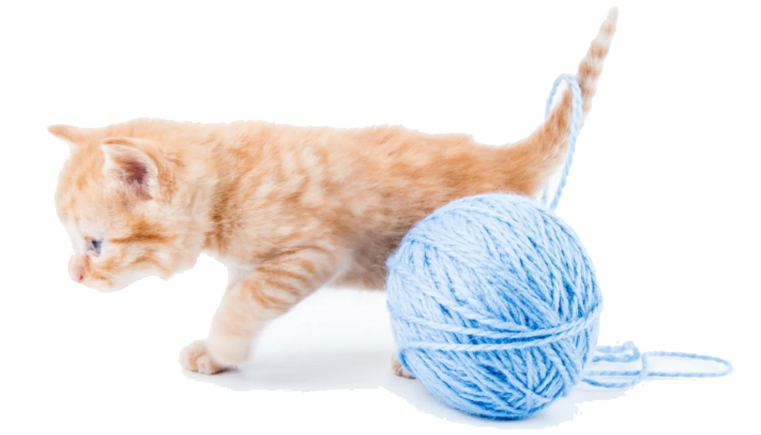

Knitting room
Knitting room
Knitting room
Knitting room
Интересные статьи
Чтобы вязание стало ещё более увлекательным занятием, предлагаю Вам прочитать приложенные статьи и посмотреть информативные и интересные видео на рекомендуемых You-Tube каналах. Вяжите с удовольствием! ❀
Захватывающие статьи.
♥ Что же такое связала финская вязальщица, которая удивила всех? За чем гоняются коллекционеры со всего мира? Об этом и различных фактах Вы узнаете из источников, которые приведены ниже.
- "Исторические и не только факты о вязании" - данный ресурс содержит 17 удивительных фактов о вязании, которые точно Вам понравятся.
- "Погоня коллекционеров" - потому что картины "пишут" не только красками...
- "«Золотые руки» финской художницы" - о том, что вязать можно не только игрушки, а также людей и целые комнаты.
Текстовые статьи:
You-Tube каналы.
♥ Предлагаю начать практиковаться с помощью видео с You-Tube, так как они помогают больше понять суть процесса благодаря подробным и наглядным объяснениям. Ниже приведу каналы с превосходными объяснениями :).
- "Уроки ВЯЗАНИЯ для начинающих" - здесь собраны замечательные видео, в которых объяснено вязание красивых ажурных узоров. Может быть полезен как новичкам, так и профессионалам!
- "CHEBURECHNAYA" - самые современные и актуальные идеи. Если хотите быть в тренде, то Вам точно сюда.
- "Yana Dym_sky" - подробные мастер-классы популярных Тильд, которые приходятся всем по душе.
- "Татьяна Мединцева. Вязание" - множество мастер-классов игрушек из плюшевой пряжи, которые смогут порадовать как детей, так и взрослых.
Лучшие каналы:
Общий итог
Теперь у Вас есть вся необходимая информация для того, чтобы "влиться" в мир вязания. Пробуйте новые узоры и вяжите изделия, тогда Ваши навыки будут совершенствоваться каждый день. Если появились какие-то вопросы, вы можете заполнить форму обратной связи и мы ответим в ближайшее время ✉ .
